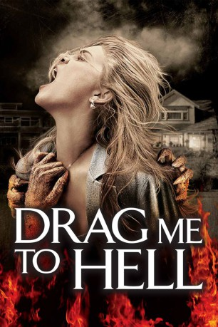
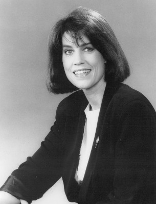

#5855 Drag Me to Hell
 
 IMDB-Wertung: 6.6 / 10
IMDB-Wertung: 6.6 / 10  Tomatometer: 92
Tomatometer: 92  Metascore: 0
Metascore: 0 
Christine arbeitet in einer Bank und hat dabei nicht immer die leichtesten Aufgaben zu tun. Nicht selten kommt es vor, dass sie mit einer Entscheidung das Leben eines Menschen kompett verändert. Als eine alte Zigeunerfrau darum bittet, das ihr Kredit, den sie nicht bezahlen kann, verlängert wird, lehnt Christine ab. Als sie ihren Arbeitstag beendet und ins Parkhaus zu ihrem Auto geht, lauert ihr die alte Frau auf und belegt sie mit einem Fluch.
Jahr: 2009
Dauer: 98 Minuten
FSK: 16
Land: USA Studio: Universal PicturesTonspuren: DTS - ,
Untertitel: Deutsch,
Auflösung: 1080p (1920x800) Größe: 5888 MB
Genre: Thriller, Horror
Regisseur:  Sam Raimi
Sam Raimi
Drehbuch: Tracy Letts
Soundtrack:
Darsteller:
- Alison Lohman als Christine Brown
 Justin Long als Clay Dalton
Justin Long als Clay Dalton- Lorna Raver als Mrs. Ganush
- Dileep Rao als Rham Jas
 David Paymer als Mr. Jacks
David Paymer als Mr. Jacks Adriana Barraza als Shaun San Dena
Adriana Barraza als Shaun San Dena Chelcie Ross als Leonard Dalton
Chelcie Ross als Leonard Dalton Reggie Lee als Stu Rubin
Reggie Lee als Stu Rubin-  Molly Cheek als Trudy Dalton
 Bojana Novakovic als Ilenka Ganush
Bojana Novakovic als Ilenka Ganush Kevin Foster als Milos
Kevin Foster als Milos- Alexis Cruz als Farm Worker
- Ruth Livier als Farm Worker's Wife
- Flor de Maria Chahua als Young Shaun San Dena
- Christopher Young als Pedestrian with Cupcake
- Ricardo Molina als Male Mortgage Customer
 Fernanda Romero als Female Mortgage Customer
Fernanda Romero als Female Mortgage Customer Joanne Baron als Mr. Jacks' Secretary
Joanne Baron als Mr. Jacks' Secretary Ted Raimi als Doctor
Ted Raimi als Doctor Octavia Spencer als Bank Co-Worker
Octavia Spencer als Bank Co-Worker Alex Veadov als Man with Ponytail at Death Feast
Alex Veadov als Man with Ponytail at Death Feast- Bonnie Aarons als Mother and Daughter at Death Feast
- Lia Johnson als Waitress
- Chloe Dykstra als Young Couple at Diner
- Nick Vlassopoulos als Young Couple at Diner
 John Paxton als Old Couple at Diner
John Paxton als Old Couple at Diner Irene Roseen als Old Couple at Diner
Irene Roseen als Old Couple at Diner- Tony A. Angelo als Bank Guard , uncredited
- Annalee Autumn als Gypsy , uncredited
- Jennifer Blackwell als 19th Century Ghost , uncredited
 Paul Edney als Bank Customer , uncredited
Paul Edney als Bank Customer , uncredited Sam Raimi als Ghost at Seance , uncredited
Sam Raimi als Ghost at Seance , uncredited- Shiloh Selassie als Farm Worker's Son
- Ali Dean als Pawn Broker
- Meyoung Laman als Bank Co-Worker
- Bill E. Rogers als Security Guard
- Cherie Franklin als Cackling Woman at Death Feast
- Olga Babtchinskaia als Violinist at Death Feast
- Emma Raimi als Mother and Daughter at Death Feast
- Michael Peter Bolus als Mourner at Death Feast
- Peter Popp als Mourner at Death Feast
 Scott Spiegel als Mourner at Death Feast
Scott Spiegel als Mourner at Death Feast Bridget Hoffman als Ghost at Seance
Bridget Hoffman als Ghost at Seance- Tom Carey als Old Man in Headlights
- Jay Gordon als Family at Diner
- Henry Raimi als Family at Diner
- Lorne Raimi als Family at Diner
- Aimee Miles als Saleswoman
- Art Kimbro als Lamia
- Jack White als Chef / Waiter , uncredited
Datei: X:\2009(A-F)\Drag Me to Hell (2009, FSK16, 1920x800).mkv seit 30.03.2017
Festplatte: HD 2008(G-Z)-2009(A-F)
 Es gibt insgesamt 91 Filme in der Gruppe '2009(A-F)'
Es gibt insgesamt 91 Filme in der Gruppe '2009(A-F)'